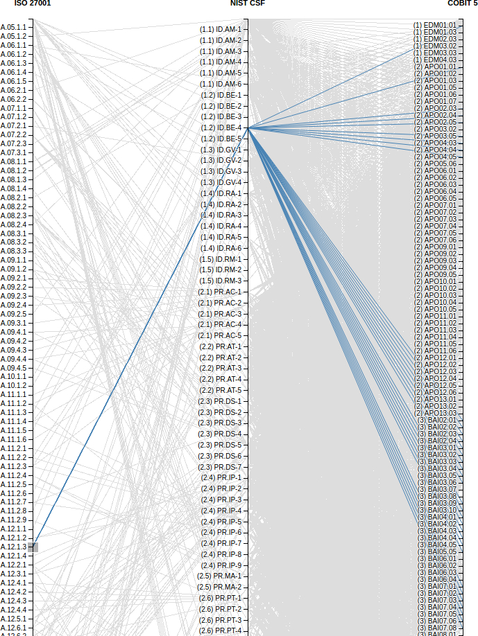
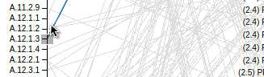
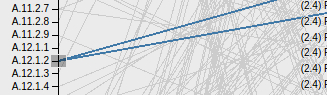
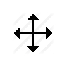
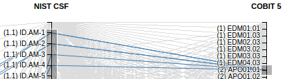

by Mark Alabanza, MBA, BSAc, CISA
2016 Oct 01
Click here for a live demo of the visualization. It takes a while to load the 6,329 records of the data table. Please let me know of any other issues in loading the web page.
The frameworks
Popular frameworks applicable to cyber security include ISO/IEC 27001, the NIST Cybersecurity Framework, and ISACA’s COBIT 5. This visualization shows the mapping of prescribed activities of each framework to the others.
The mapping
In the image below, ‘ISO/IEC 27001 A.12.1.3 Capacity Management’ is mapped to ‘NIST Cyber Security Framework ID.DE-4 Dependencies and critical functions for delivery of critical services are established.’ That, in turn, is mapped to the following 33 COBIT 5 Process Enablers.

Walkthrough of one sample
Here is how the visualization isolated the mapping for A.12.1.3.
When the mouse pointer is close to one of the vertical lines, it changes to a crosshair image. Bring the crosshair to the tick mark (or group of consecutive tick marks) that would be isolated. Hold down the right mouse button and drag the pointer to create a grey rectangle on the selection.  The grey rectangular selection can be moved to another tick mark (or group of tick marks). Put the mouse pointer on the current grey rectangular selection until it changes to a 'move' image. Hold down the right mouse button and drag the 'move' image and rectangle to the desired tick mark/s.   Increase or decrease the height of the grey rectangular section by dragging its top margin or bottom margin. Selections can be marked on each of the three vertical lines individually or simultaneously. 
Next steps
Selections can be improved by simply putting the mouse pointer on a text or a line.